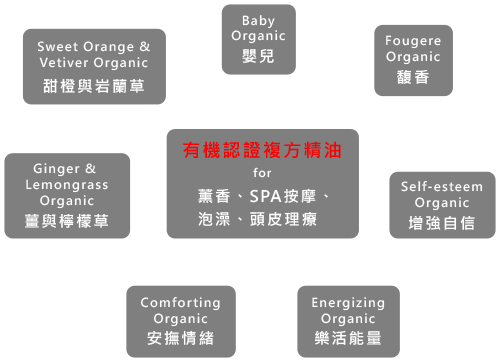

首頁
關於我們
產品項目
香調
精油
SPA
生化原料
花水
English
產品項目
精油
認識粨合
產品介紹
天然精油
簡介及原料來源
天然精油簡介：精油是萃取植物特有的芳香物質，取自於草本植物的花、葉、根、樹皮、果實、種子、樹脂等以蒸餾、壓榨方式提煉出來的。
原料來源：粨合所提供的100%天然單方精油源自於國外供應商的先進設備與歷史悠久的專業技術。 更重要的是，供應商對於原料來源及產地的挑選有著多重考量，包括土質、溫度、濕度、緯度、海拔等因素， 藉以取得最優質的精油。
製程與效用
取得方法：精油由於製造過程煩瑣，原料取得不易，無法大量生產。植物有適合栽種的區域，同樣的植物在不同區域、氣候對精油的效果會不同，受過污染與未污染的植物也有差異，加上精油的提煉需要大量的植物，200公斤的薰衣草只能提煉1公斤的精油，2到4公噸的玫瑰只能提煉1公斤的精油。
效用：精油分子小容易被人體吸收，能迅速滲透人體內器官，平衡體內機能，達到美容護膚的作用。精油可以漸進緩和的方式帶動身心靈的調和。可想而知精油對人體的奧秘是無比寬廣的。
有機認證精油
簡介及官方認證
有機環境下生長的植物，水源、土壤、空氣都要受到嚴格的安全控制和污染監測，植物的生長環境得到淨化，各項指標均達到有機標準。在這樣的環境中生長起來的植物健康而沒有污染，從它們身上萃取的精油就是有機精油。粨合所提供的有機精油，皆由美國農業部(USDA)頒發“有機證書"。
取得方法
有機精油是從植物的花、葉、莖、根或果實中，通過水蒸氣蒸餾法、擠壓法、冷浸法或萃取法提煉萃取的揮發性芳香物質。
有機植物精油的萃取要求極為嚴格，拒絕使用溶劑提取和醇提提取的萃取模式，以確保精油的品質。
複方精油作用
有機精油天然的芳香經由嗅覺，使精神呈現最舒適的狀態，是守護心靈的天然良方。精油本質可預防發炎、促進細胞新陳代謝及再生功能，某些精油還能調節內分泌器官，促進荷爾蒙分泌，讓人體的生理及心理活動，均獲得良好的平衡。
複方精油是為了達到特定療效將2種以上的精油混合，相互協調、相輔相成、增強的作用。故複方精油的製程相當倚賴於不同植物的收成、萃取、蒸餾與相互作用有瞭若指掌的認知，才能有效達成平衡。
